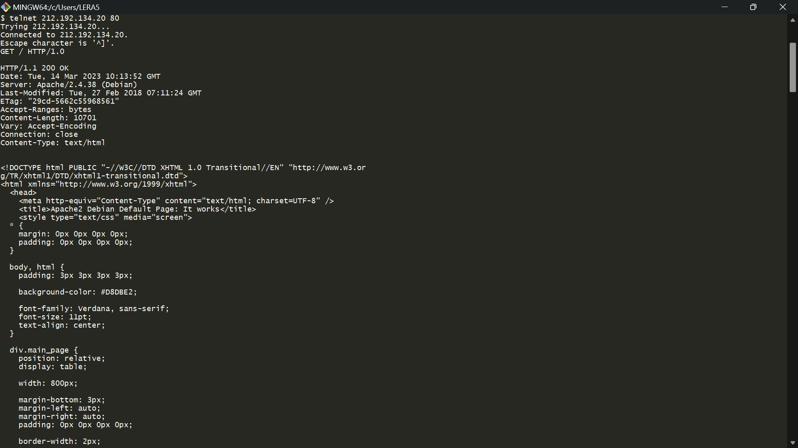
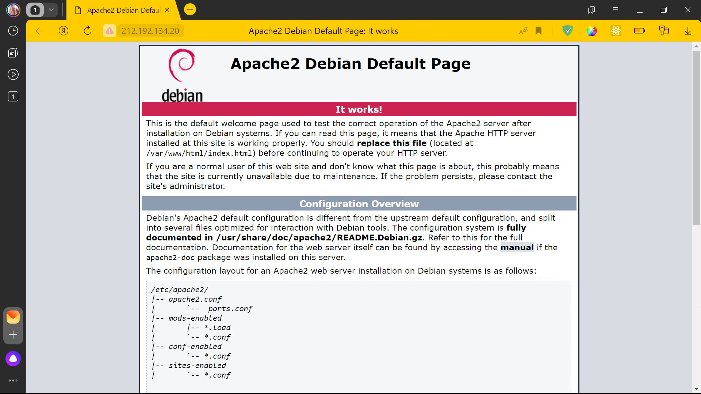
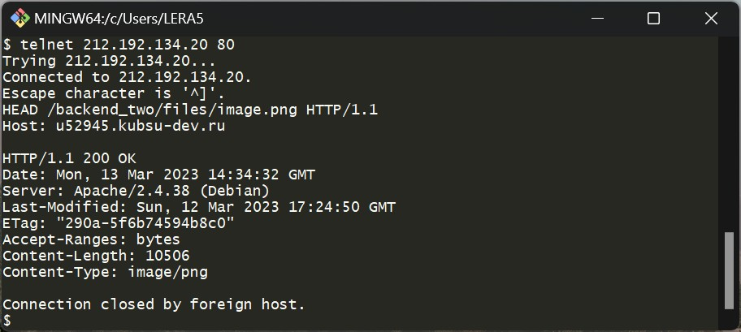
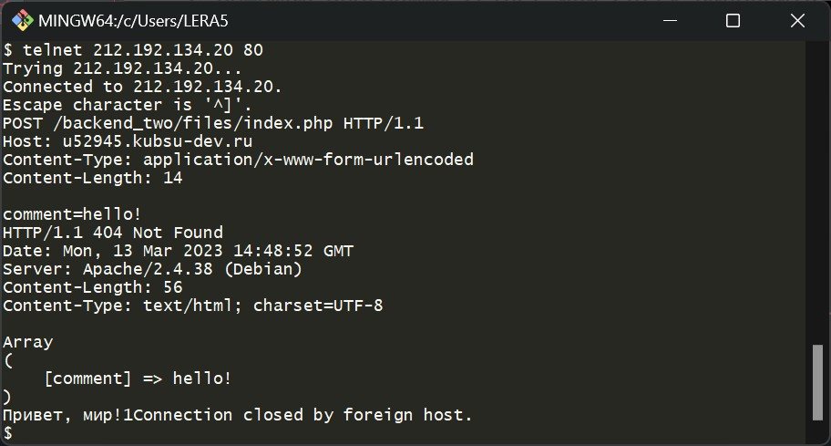
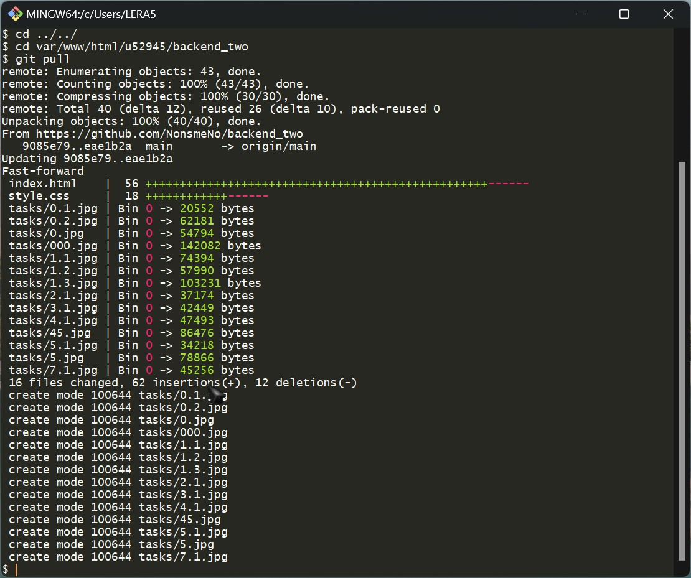

ЗАДАНИЕ 2
HTTP-ЗАПРОСЫ
перед выполнением заданий нужно
создать репозиторий, загрузить туда файлы из каталога files. Затем подключиться к учебному серверу
и склонировать репозиторий с файлами с помощью команды git clone
 Здесь видно, что все файлы загрузились на сервер
Здесь видно, что все файлы загрузились на сервер
 Далее проверка загрузки файлов в браузере учебного домена
Теперь нужно внести запросы в файл, чтобы потом скопировать их оттуда
Далее проверка загрузки файлов в браузере учебного домена
Теперь нужно внести запросы в файл, чтобы потом скопировать их оттуда

ЗАДАНИЕ 1
Для соединения с веб-сервером с использованием telnet нужно выполнить команду:telnet "ip-адрес-веб-сервера" 80
и далее через буфер обмена скопировать запрос из текстового файла
получение главной страницы
методом GET
в протоколе HTTP 1.0


ЗАДАНИЕ 2
получение внутренней страницыметодом GET
в протоколе HTTP 1.1
ЗАДАНИЕ 3
определение размера файла file.tar.gz, не скачивая егоразмер файла file.tar.gz = 11335 байт

ЗАДАНИЕ 4
определение медиатипа ресурса /image.pngметодом HEAD
медиатип ресурса /image.png = image/png 
ЗАДАНИЕ 5
отправление комментария на сервер по адресу /index.phpметодом POST
С помощью заголовка Content-Type клиент сообщает серверу тип отправляемых данных в простой форме запроса используется application/x-www-form-urlencoded (значения кодируются в кортежах с ключом, разделённых символом '&', с '=' между ключом и значением.)
С помощью заголовка Content-Length нужно указать размер в байтах отправляемых данных 
ЗАДАНИЕ 6
получение первых 100 байт файла /file.tar.gzметодом HEAD
Заголовок Range указывает серверу байты из какого диапазона ему необходимо вернуть,
в данном задании: 0-99

ЗАДАНИЕ 7
определение кодировки ресурса /index.phpметодом HEAD
кодировка ресурса /index.php = charset=UTF-8
 После выполнения заданий надо загрузить скриншоты в репозиторий
и с помощью команды
После выполнения заданий надо загрузить скриншоты в репозиторий
и с помощью команды git pull
добавить изменения файла index.html на учебный сервер
